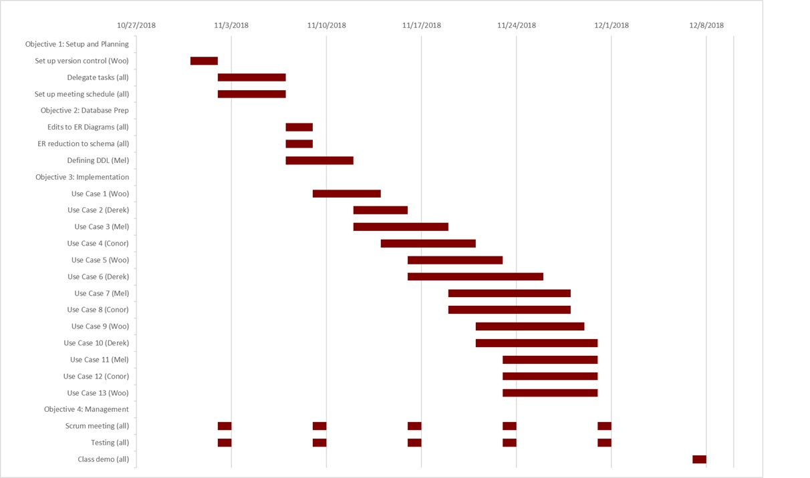
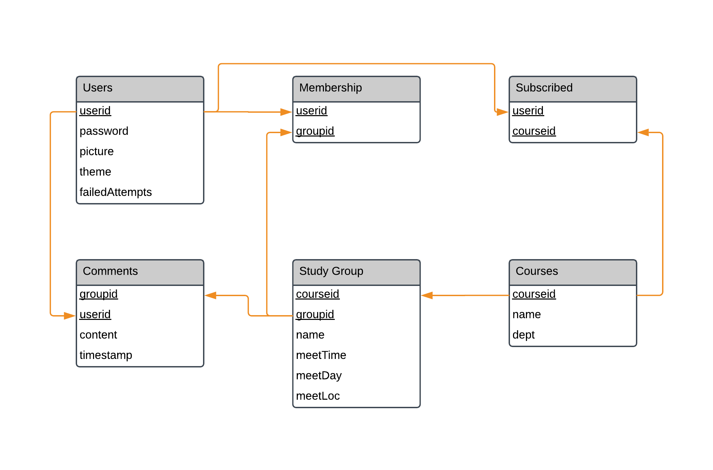

Project Proposal : loggrg8 a.k.a loggregate
Introduction
As students at University of Puget Sound, we have noticed that there is a significant lack of collaboration among some students in the same classes. This is caused due to difficulty in communicating with classmates and issues with organizing meeting sessions. Because of these reasons, we believe our clients (students of UPS) will require a method to easily access their current classes and discover study groups for their classes. Furthermore, they will also require a method to communicate and coordinate within the group.
In order to solve this problem, we aim to create a web app that allows students to easily find study groups for the classes they are currently enrolled in. Users will register by using a valid university email address and find their current courses. On the course page, the user will have the ability to subscribe to that class for the semester and discover study groups. The user may also create a study group at a predetermined meeting time and other users may join that study group. Within each study group, we plan to implement a drop-down menu that displays current members of the group and a comment box for users to communicate with. This design will allow students to find study groups for their current classes and organize meeting times in a significantly easier way.
To implement this web app, our team believes that a database design would be the optimal solution. Based on the function of our app, it would require multiple databases, including ones to store users, courses, study groups, and group members. Furthermore, relational algebra queries will be necessary to filter courses and study groups for users.
Use Cases
- Use Case 1: Users can login to our system with a username and password, which are both encrypted in the database. The login form has a checkbox option for “Remember me”. If this option is checked, upon successful login, the website will remember them for a 7-day period (without requiring login if they leave and return to the site later). If not checked, the site will only remember them for a 1-hour period.
- Use Case 2: To prevent malicious users from potentially harming our Puget Sound community, we will enforce that account creation is done using a valid pugetsound.edu email. Once a new user has completed signing up, the website will send a verification email to their valid pugetsound.edu address.
- Use Case 3: On signup, the user will be asked to select which courses they are currently taking. This will automatically subscribe the user to new study group alerts for the course in which they are enrolled in. Users will have the option to turn this setting off on their MyGroups page.
- Use Case 4: Once the user has signed up, they may browse the numerous study groups available on the website. However, they will have restricted access-no study group creation, no commenting, etc- until their email address is verified by the link sent to their address. Once an account is verified, the new user is no longer restricted.
- Use Case 5: To protect user accounts, we will add brute force protection by limiting the number of failed login attempts by 5. At the fifth attempt, the user can request to have their password changed by entering their email address. An email will be sent to the user with a link that will reset their password.
- Use Case 6: Users can join an existing study group session of a course by clicking the “join” button. Users may also leave an existing study group session of a course by clicking the “leave” button.
- Use Case 7: Verified users can make a study group on a given course page, providing a meeting time and indicating a time and location when the study group would meet. The user can also set the study group as a recurring event.
- Use Case 8: Users who have joined groups can view all the study groups they have joined on an aggregate page with expandable details (MyGroups page). Prior to expansion, the groups list the upcoming time for the group’s next meeting, location, study objective, and the creator of the group. The expansion reveals users currently in the group, posts members have made about the group.
- Use Case 9: Users who have navigated to their desired course page will have the ability to view a course calendar that includes the planned meeting times for all study groups posted to the course page. Furthermore, the user will have the ability to alter the calendar to display daily, weekly, or monthly views.
- Use Case 10: Users will also have the ability to navigate to a personal calendar that includes the planned meeting times for the study groups that the user has joined. Again, the user will have the ability to alter the calendar to display daily, weekly, or monthly views.
- Use Case 11: When all members have left a study group or the semester ends, the study group is deleted.
- Use Case 12: Users who create a new study group at a partially or fully overlapping time of another study group will get notified that there is a pre-existing study group meeting at a similar time.
- Use Case 13: Users can change various settings related to the website such as changing themes to Dark Theme and setting their profile picture.
Project Management Plan

Proposed Relational Database Schema
